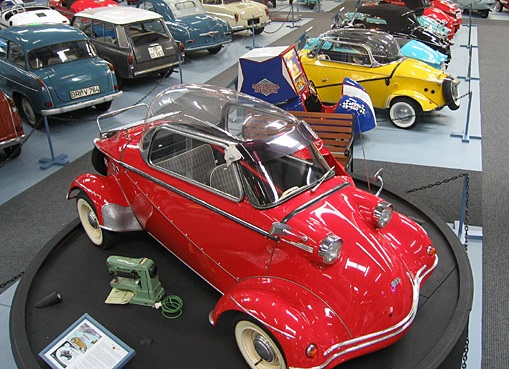
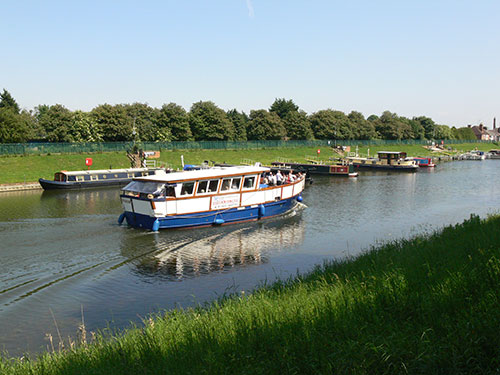

Welcome to Boston
Homed to one of the largest ever parish Churches, the "Stump" is plotted in the centre of the town. Surrounded by shops and tearooms, its easily accessible and neighboured to the weekly stalls bringing in goods from around the country.
Expansion is key to Bostons thriving Business, a new "Mini" shopping mall opened a stones throw away from the church providing shoppers ample stores to get what they need. The town is situated between many travel sites such as Skegness and Hunstanton only 30minutes away! making this a key area to stop and have a look around.

Bubble Car Museum
Visit the Bubble car museum located just outside of Boston. Home to some of the rarest bubble cars from the early 50's/60's.
Eat out?
Local treats available from the traditional "tates chip shop" along with a host of exquisite restaurants and diners.
Witham Cruise
Relax on the River Witham boat tour, getting up close to the town but from a different perspective and at a low price.
© Boston Lincs.